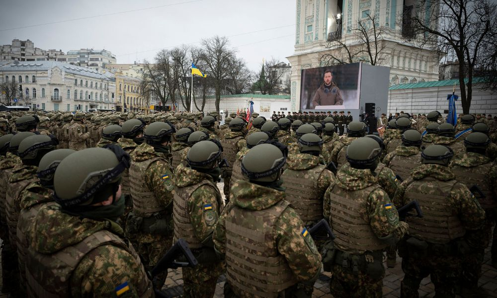
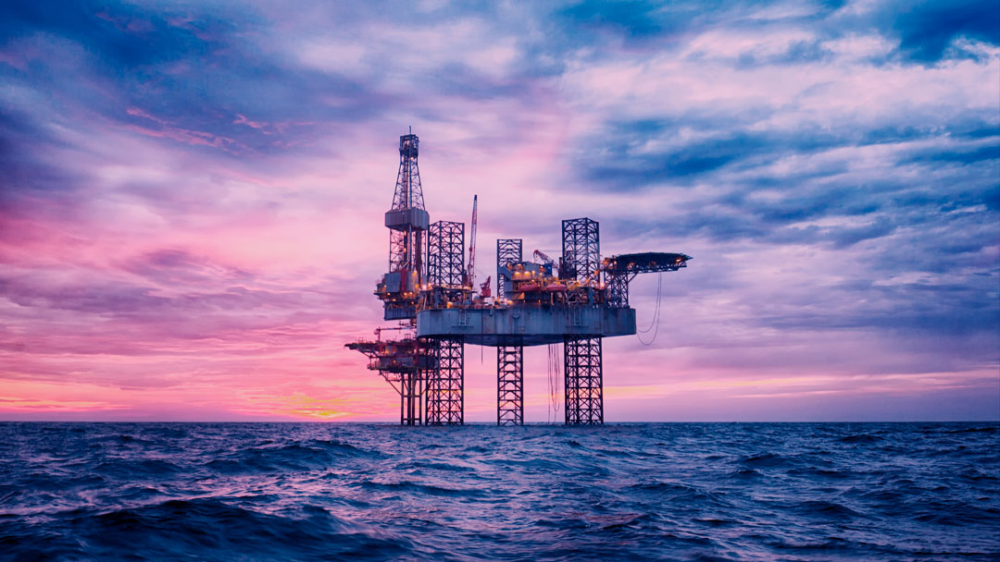

Fique por dentro das últimas notícias sobre segurança, tecnologia e eventos globais que impactam a sua proteção. Mantenha-se atualizado com informações relevantes para garantir sua segurança e bem-estar.
Produtos

A guerra na Rússia é um conflito complexo e devastador que envolve interesses políticos, territoriais e econômicos significativos.
Donald Trump é uma figura política controversa e ex-presidente dos Estados Unidos, conhecido por suas políticas polarizadoras e estilo de comunicação direto.
A polícia armada atua na linha de frente da segurança pública, utilizando armas de fogo para proteger a comunidade e responder a situações de alta periculosidade.
